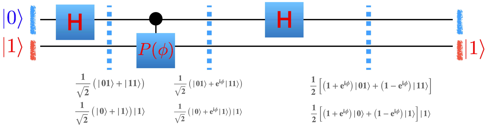
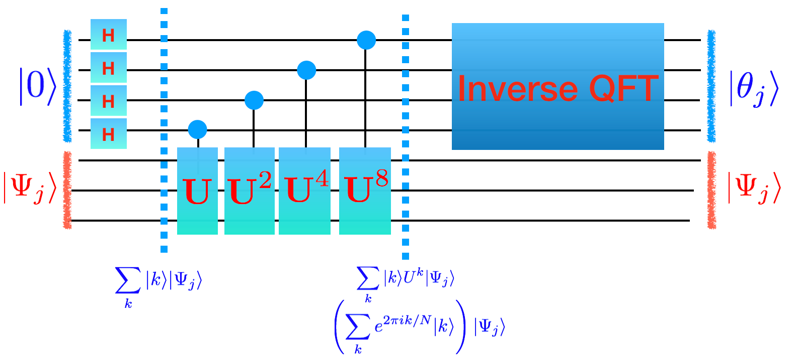

Phase estimation#
The quantum piece of Shor’s algorithm is period finding.
The key to doing period finding is doing phase estimation.
In phase estimation we have a unitary matrix \(U\) represented as a set of gates.
Unitary matrices have eigenvalues and eigenvectors.
The eigenvalues are always of the form \(e^{2\pi i\theta}\).
Our goal in phase estimation will be to take an eigenvector \(|\Psi_j\rangle\) of \(U\) such that \(U|\Psi_j\rangle = e^{2\pi i\theta_j}\) and get our quantum circuit to tell us \(\theta_j\)
\(0\leq \theta < 1\).
This means that if the binary string we get is “011” that this is \((0 \times 1/2) + (1 \times 1/4) + (1 \times 1/8)=3/8\). Another way we can think of \(\theta_j\) is the binary number (i.e. 011 or 3) divided by the size of the Hilbert space, \(2^\textrm{number of top wires}\) (i.e \(2^3=8\)). In our above example this also gives us 3/8.
We will assume in this process that we have access to the gates which make up \(U\) as well as a way to start in an eigenvector.
We will split up our wires into two parts: the top (blue below) and bottom (red).
At the top we are going to put it \(|0\rangle\) and at the bottom we are going to put in \(|\Psi_j\rangle\) so the total state is \(|0\rangle|\Psi_j\rangle\)
At the end of the circuit we want the top to be \(|\theta_j\rangle\) and the bottom to still be \(|\Psi_j\rangle\) so the total state is \(|\theta_j \rangle |\Psi_j \rangle\).

Let’s just consider the case where the unitary circuit \(U\) is just a single phase gate \(P(\phi)\). First, notice that the eigenvalue of \(P\) are \(|0\rangle\) and \(|1\rangle\) with eigenvalues \(e^{i 0}\) and \(e^{2\pi i (\phi/2\pi)}\). So \(\theta_0 = 0\) and \(\theta_1 = \phi/(2\pi)\).
The number of bottom wires then is going to be 1 (since our unitary \(U\) only has one wire). The number of top wires is going to depend how accurate we want to be.
If we only have one wire on the top then all we can say is that the phase \(\theta_j =\phi/2\pi\) is close to 0 or close to 1/2.
If we have two wires on the top then we could get the binary numbers: \(|00 \rangle \rightarrow 0\), \(|01\rangle \rightarrow 1/4\) , \(|10\rangle \rightarrow 1/2\) , \(|11\rangle \rightarrow 3/4\). So the best we could hope for is whether \(\theta_j\) is close to \(0,1/4,1/2\), or \(3/4\).
Let’s start with one wire where we can largely work things out by hand. Implement the following circuit into your simulator and check that you get the right result. 
To initialize your simulator in the configuration shown in the picture you want to start your initial basis as \(|1\rangle\) (Do you understand why this is?)
Let’s now consider what you get on the top wire after measurement. With probabibility \(|(1/2) \times (1+\exp[i\phi])|^2\) you get a zero and with probability \(|(1/2) \times (1-\exp[i\phi])|^2\) you get a one.
if \(\theta_j=0; 2\pi\theta_j=\phi_j=0\) then we should always see 0 on the top wire with 100% probability.
if \(\theta_j=1/2; 2\pi\theta_j=\phi_j=\pi\) then we should always see 1 on the top wire with 100% probability.
Consider what we get in the other cases.
Grading
Run your simulator for 100 evenly chosen values of \(\phi\) between \(0\) and \(2\pi\) and make the following graph: On the x-axis put \(\phi/(2\pi)\) and on the y-axis put the \(\theta_j\) maximally predicted by your circuit. Understand why it is the best you can expect.
As a separate graph, let \(\phi/(2\pi)=0.1432394487827058\) and graph a histogram of the probability your circuit gives back the result \(\theta_j\) (as a function of \(\theta_j\)). Mark on your histogram \(0.1432\). Post them in your document.
Let’s try to improve upon our accuracy (let \(N\) be the number of top wires which sets our accuracy):
 The reverse gate, as you might expect, reverses the order of its input wires. For two wires this is the same as a swap gate.
The reverse gate, as you might expect, reverses the order of its input wires. For two wires this is the same as a swap gate.
Grading
Implement this circuit and produce the same graphs as above. Post them in your document.
Again, this seems to be doing the best we can do with only two wires on top. Let’s see how to do this in general.
Now we want to understand how to do this in general. What is the general pattern? (*Notice: * If you look through the math there was nothing special about the phase gate. In the picture below we will use \(U\) and \(|\Psi_j\rangle\). You can mentally replace these with \(U=P(\phi)\) and \(|\Psi_j\rangle=|1\rangle\) and \(|\theta_j\rangle = |\phi/2\pi\rangle\))
(Notice that \(\sum_k |k\rangle e^{2\pi i k\theta_j }|\Psi_j \rangle\) is the same as \(\left( \sum_k e^{2\pi i\theta_j k } |k\rangle \right)\otimes |\Psi_j \rangle\))
To get the second arrow correct, we can think of the number \(k\) in binary as \(k_2 k_1 k_0\). Then we could write what we want to do as
\(\sum_k |k_2 k_1 k_0\rangle U^{k_0} (U^2)^{k_1} (U^4)^{k_2}\).
This can be done by having a control wire from each of the wires for \(|k\rangle\) down to \(U\) and \(U^2\) and \(U^4\) respectively.
Accomplishing the last arrow is done by the inverse of the quantum fourier transform. Pause this page and go here to build it.
Now that you’ve figured out how to build a general quantum fourier transform, you need to figure out how to invert it. The easiest way to do this is to write a python script invert.py which takes a circuit description and inverts it.
Now that we have a working inverse quantum fourier transform, we can produce a general circuit that gets us whatever accuracy we want for our phase gate \(P(\phi)\). Go ahead and write a python script which generates a circuit which takes as input the number of wires on the top to build and builds a circuit where \(U=P(\phi)\) below

Q: How should we build a circuit for \(U^4\)? We could just write \(U U U U\) (and because of the fast-fowarding theorem, generically this is the best we can do - sometimes we will find something more efficient like in Shor’s algorithm).

Grading
Run your code to generate a circuit description with 6 wires on top and then run your simulator making the same two graphs as above.
Congrats! You are successfully doing phase estimation.
Eigenstates in the bottom wires#
So far, we’ve only been putting in the eigenstate \(|\Psi_1\rangle = |1\rangle\). Q: What happens when you put it the other eigenstate \(|\Psi_0\rangle = |0\rangle\)?
Q: What happens if you put in a linear superposition of eigenstates?
Grading
Using \(\phi=0.5\) put into your simulator as the initial state \(\sqrt{0.3} |\Psi_0\rangle + \sqrt{0.7}|\Psi_1\rangle\). Make a graph which histograms how often you get all \(2^6\) outputs.
Notice that if you put in a linear superposition of eigenstates \(\sum_j \alpha_j |\Psi_j\rangle\) you get out a phase \(\theta_j\) with probability \(|\alpha_j|^2\)
Speed#
How fast is your algorithm?
The QFT takes a number of gates which is quadratic in the number of wires. Outside of the QFT, the number of phase gates you have to use, though, is exponential in the number of wires. This is bad! Generically you can’t do better then that (this is called the no fast forwarding theorem!) but, in special cases, there are tricks to speed things up.
For a phase gate (and Shor’s algorithm) there are tricks. Figure out what the trick is here to replace many phase gates with a single gate.
Run \(\phi=0.5\) with six wires again using that trick.
Grading
Paste that circuit description (up through the controlled-phase gates).
A different unitary circuit.#
The next step is to try a different circuit on the bottom wire. Generalize your code to take an arbitrary circuit description of NOT and P gates at the bottom (it would be nice to do a general circuit on the bottom but you’d have to learn how to do control-H and control-control-NOT) and do phase estimation on that circuit.
For example, we could replace the bottom wire (which was a single phase gate) with the following two wires
2
NOT 0
P 0 0.3
NOT 1
Determine how to compute the phase of the unitary which represents this circuit of two wires, just as we did with the phase gate.
Grading
Generate a histogram of the probability of a given set of wires on the top.